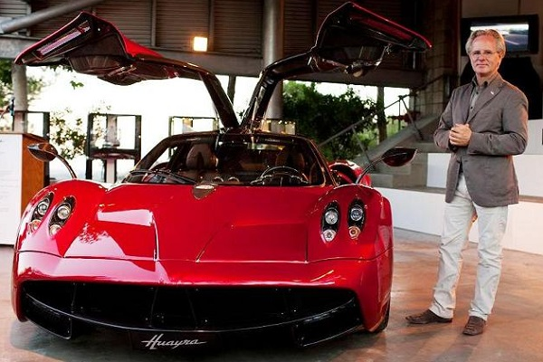

|  | inicio |
biografia |
logros |
contacto |
 |
||||
A la edad de apenas 10 años, los padres de Horacio Pagani notaron su interés por los coches. El argentino pasaba sus ratos libres diseñando bosquejos de vehículos en papel para luego hacerlos realidad con bloques de madera. Uno de sus carros favoritos era el Jaguar E-Type que tenía un vecino suyo y que inspiró sus diseños a temprana edad. Su sueño desde un inicio era algún día viajar a Modena y pertenecer a las máximas firmas deportivas en la industria automotriz. Por ello, en 1977 cuando tenía 22 años de edad, al salir de la universidad ya había creado su primer coche. Con estilo de Fórmula 2, Pagani creó su primer coche llamado Limitada Santafesina. |
||||
HORACIO PAGANI |
||||
derechos reservados.2022 |
||||